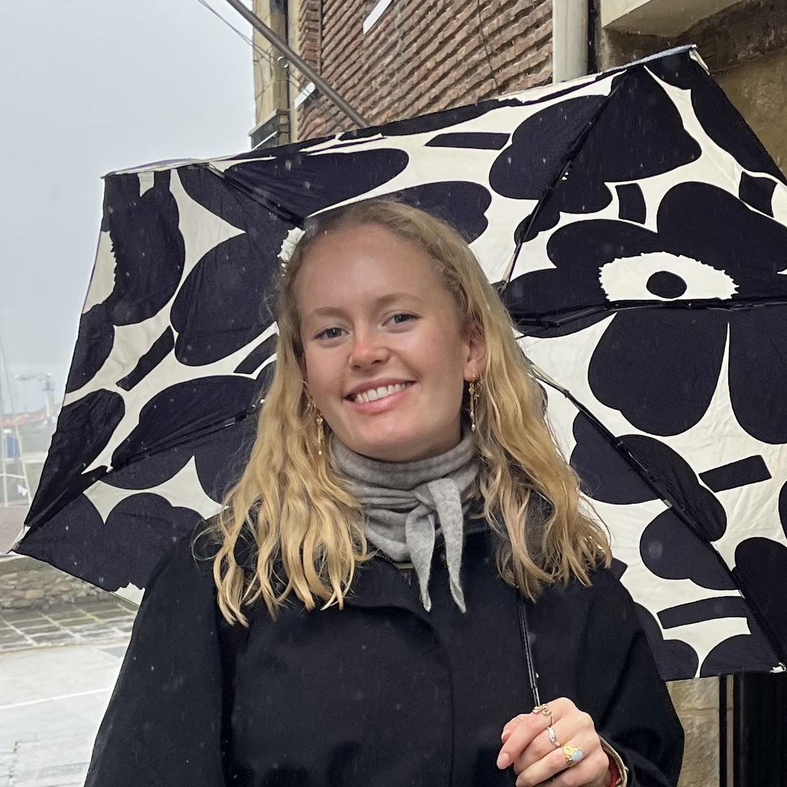
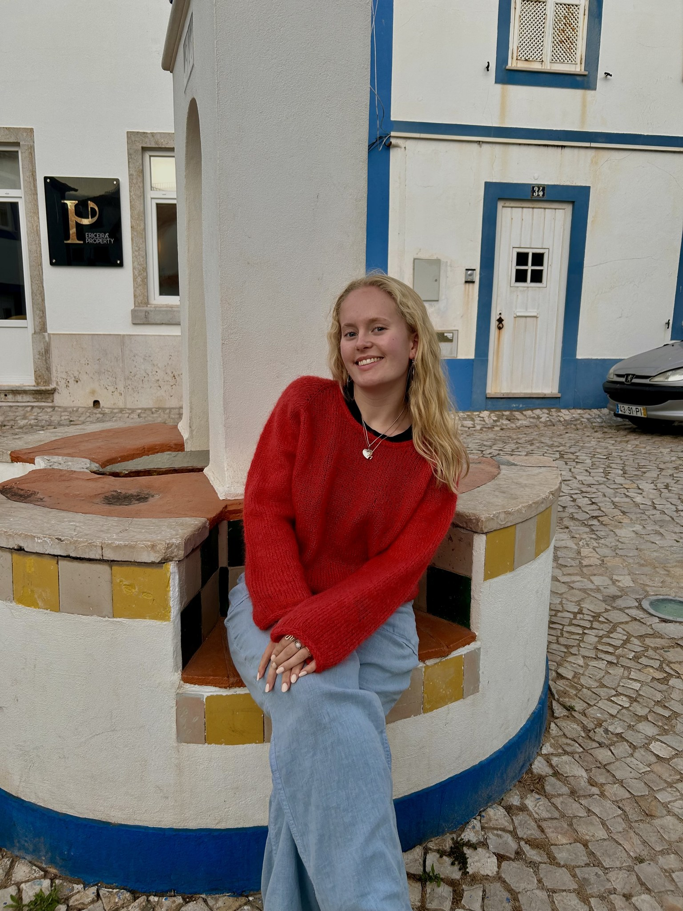

Marte
Strandli

images/profil.jpg
Velkommen til min portefølje!
Jeg studerer Industriell design hos NTNU og er nå på tredje året. Jeg valgte retningen Produktdesign, men samtidig har jeg en stor interesse for UX-design! Jeg mener man får en annen forståelse for brukergrensesnitt, mennesker og design når man jobber fysisk. Jeg ser stor verdi i å kombinere de «to verdenene», fysisk og digitalt.
Om du ønsker å bli bedre kjent med meg og hva jeg gjør ville jeg anbefalt å sjekke ut min kreative blogg på Instagram!
Prosjekter
Les mer her

Om meg
Les mer herJeg tror at det som gjør meg til meg som designer er kombinasjonen av mine mange år med kreativt arbeid og kunst i ungdommen, drivkraften min når det kommer til prosjekter og arbeid, og til slutt min interesse for tekniske løsninger og realfag.

images/om-meg.jpg
Mine største interesser innenfor design er fokus på mennesket og gode tekniske løsninger.